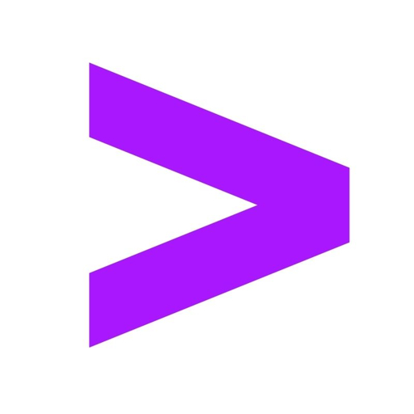
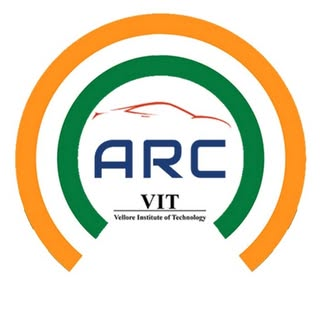

Medium
@adityagoel1999
Loading latest post...
Hang tight while the latest story loads.

MSAI candidate at Nanyang Technological University, Singapore.
Former Responsible AI Senior Analyst at Accenture.
Quick view of focus areas and outcomes
Focus
End-to-end GenAI solutions with safety evaluation
Industry Work
Modernized risk reviews and built quantitative metrics
Research
Numerical validation for financial summaries
Delivery
LLM apps from data to deployment
AI/ML specialist building reliable, scalable systems
AI/ML engineer focused on trustworthy systems and production-ready delivery. I translate research into workflows teams can adopt.
LLM fine-tuning, retrieval-augmented generation, and evaluation pipelines. Focused on Responsible AI and safety for high-stakes domains.
Collaborations and roles where reliability, governance, and measurable impact are core product requirements.
Professional roles and leadership

Participated in venture capital education and investment processes, supporting due diligence and early stage founders.

Research contributions
Research contribution that validates numerical accuracy in financial summaries through automated checks and transformer-based reasoning.
Innovation across AI/ML
Built a platform focused on better discovery and engagement for local services. Designed for fast navigation and clear calls to action.
Outcome: Public launch with live site experience.
Engineered a product-focused sentiment analysis engine using NLP key-phrase extraction and source filtering across social media discussions and news reviews. Built a high-performance FastAPI backend leveraging Groq LPU for inference and async endpoints for parallel API orchestration.
Outcome: Near real-time insight delivery for stakeholder dashboards in finance-focused workflows.
Built a pipeline combining market news signals and price features to forecast short-term equity direction. Evaluated models with rolling-window validation and generated daily prediction snapshots for decision support. Integrated sentiment signals to improve market context for directional forecasts.
Outcome: Faster sentiment snapshots for market context.
Fine-tuned transformer models using Hugging Face for multi-label toxicity and bias classification in AI-generated text. Developed a synthetic dataset generation pipeline to study and mitigate adversarial attack possibilities on models.
Outcome: Improved safety review coverage for GenAI outputs with automated bias and toxicity checks.
Architected a RAG pipeline integrating OCR extraction, vector database indexing, and semantic search for multi-document retrieval. Implemented dynamic prompt engineering and LLM summarization with GPT-3.5 Turbo, reducing token cost by 80%.
Outcome: Accelerated multi-document lookups for business analysts with semantic search workflows.
Trained CNN-based vision models for vehicle manufacturing defect detection using PyTorch. Deployed an OpenCV pipeline to automate quality checks on production lines.
Outcome: Increased quality assurance throughput by automating defect screening in production imagery.
Academic foundation and focus areas
Nanyang Technological University, Singapore
CGPA: 3.9/5. Advanced coursework in LLMs, trustworthy AI, and applied research.
Vellore Institute of Technology
CGPA: 4.1/5. Special Achiever's Award 2020-21.
Accenture
Accenture
Accenture
Harvard College Project for Asian and International Relations
VIT University
Global Tech Innovation
Insights from Medium
Hang tight while the latest story loads.
Latest captures from Instagram
Open to AI/ML research and product roles starting in 2026.